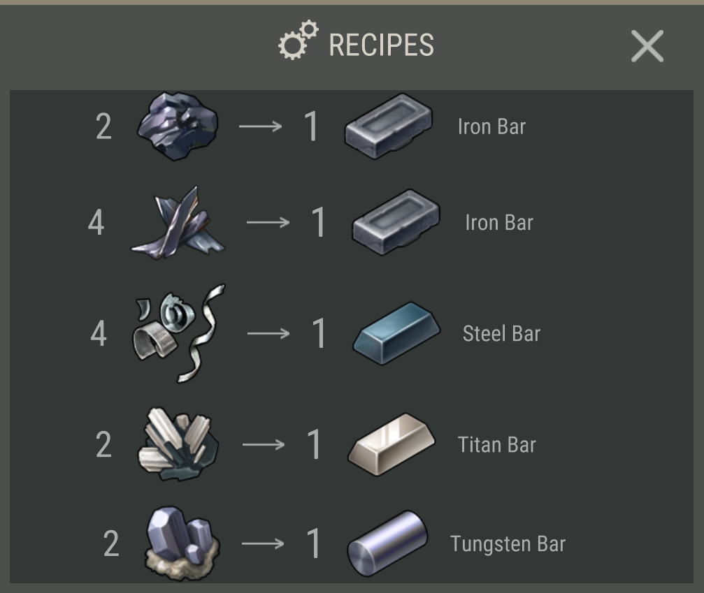

How to Find Steel
Finding steel in Last Day on Earth: Survival is a bit more speculative, since there obviously isn't any location called the Steel Woods. But players have theorized that steel bars will be obtained from smelting steel scrap, which would likely either be looted from crates, lockers, and AI players like regular scrap, or could appear within the Oak Bushes, Grove, and Woods -- as these locations seem to represent the next tier of lootable areas.